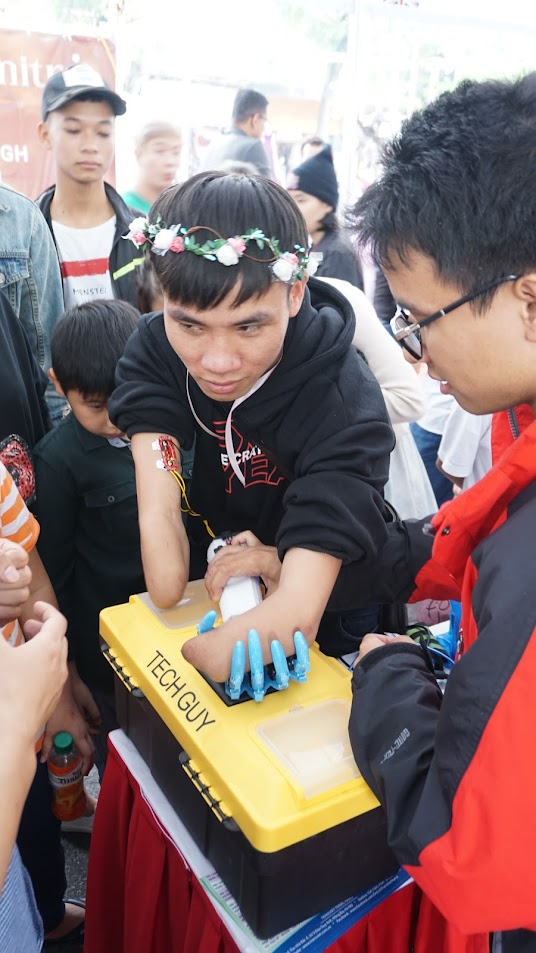
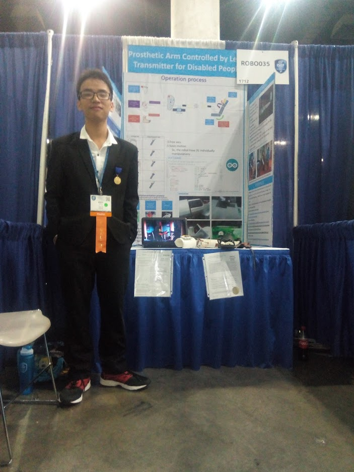
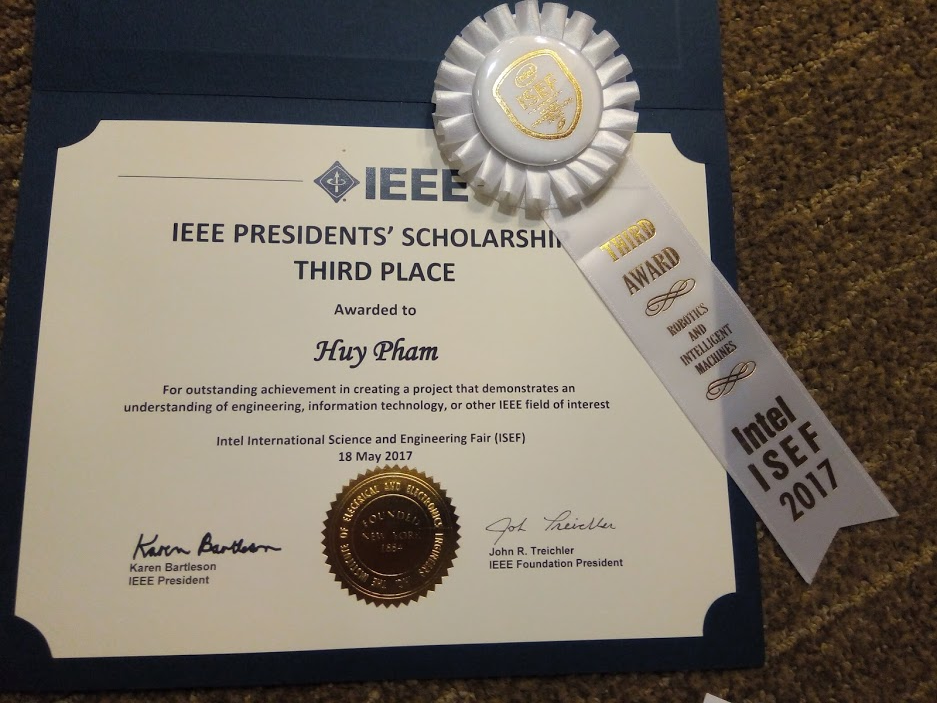

Overview
Problem
In Vietnam, many people with bilateral arm disabilities face limited access to affordable prosthetic solutions. Existing prosthetic arms are expensive (often thousands of dollars) and designed primarily for single-arm amputees, leaving those without both arms with few viable options.
Solution
A low-cost robotic prosthetic arm controlled by foot movements using sensors attached to the user's legs. Capable of 31 distinct motions including grasping, rotating, and extending, enabling basic daily tasks like eating and drinking at a production cost of only $150.
Impact
Successfully demonstrated with real users, won 3rd place at INTEL ISEF 2017 and 1st place at ViSEF 2017. Published in IEEE proceedings and featured by Vietnam's Ministry of Education, providing an accessible prosthetic solution for bilateral arm amputees.
My Role & Contributions
- Conceived and developed the complete system from initial concept to working prototype over 2 years (2016-2018)
- Designed innovative control system using leg-mounted sensors (tilting sensors on foot and ankle) to enable 31 distinct arm movements
- Created all 3D models in Sketchup and coordinated 3D printing of prosthetic components
- Built custom 3D printer from scratch to enable rapid prototyping and iteration
- Programmed Arduino microcontroller in C to process sensor inputs and control servo motors
- Conducted real-world testing with disabled users to validate functionality and usability
- Upgraded system in 2018 with EMG (electromyography) sensors for muscle-based control and human-like skin
- Presented research at international competitions (INTEL ISEF, ViSEF) and published findings in IEEE proceedings
Tech Stack & Components
Hardware
Software & Tools
Key Features
Control Mechanism
Results & Recognition
3rd Place at INTEL ISEF 2017
International Science & Engineering Fair — competed against top student researchers globally in robotics and intelligent machines category. Los Angeles, California, USA.
3rd Place IEEE Presidents' Scholarship
Awarded by IEEE (Institute of Electrical and Electronics Engineers) at ISEF 2017 for outstanding engineering innovation and technical achievement.
1st Place at ViSEF 2017
Vietnam Science & Engineering Fair — first place in Robotics and Intelligent Machines category and advanced to final round representing Vietnam.
IEEE Publication
Research published in IEEE proceedings documenting the technical design and functionality of the prosthetic arm system.
Real-World Testing
Successfully tested with disabled users performing daily tasks: holding spoons and bowls for eating, turning lids, pouring drinks. Video documentation available.
Cost Achievement
Total production cost of approximately $150 — making advanced prosthetic technology accessible to people with disabilities in developing countries where commercial options cost thousands of dollars.
Project Gallery






Development Journey